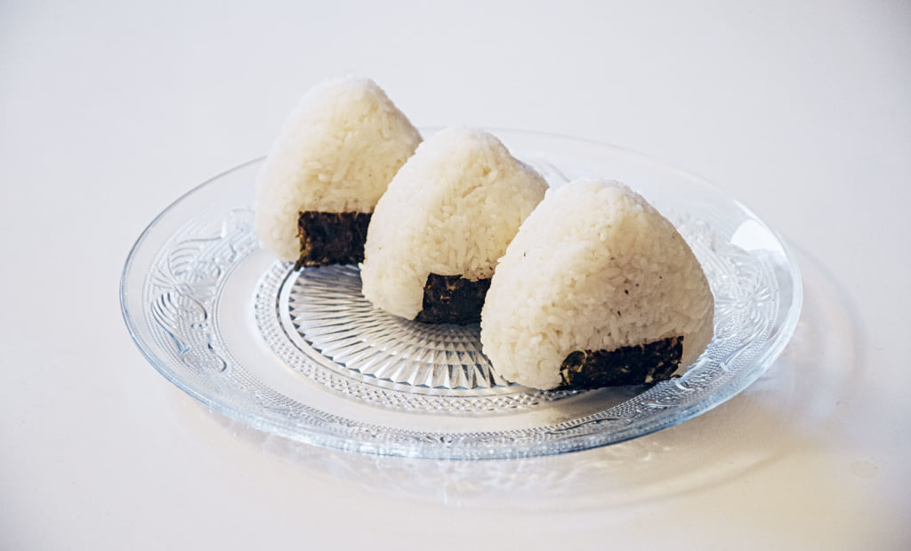

Chihiro's Onigiri

Description
Perfect as a snack or as a tasty lunchbox treat, onigiri is a rice ball that contains various fillings inside depending on your taste. It is also a great way to use up leftover ingredients to make for a quick eat that you can also take on the go.
Ingredients
- 6 mini sheets of roasted seaweed (also called "nori")
- 3/4 cup shredded cooked salmon or tuna
- 1 tbsp kewpie mayonnaise (Japanese mayonnaise) or regular mayonnaise
- 2 cups Japanese short-grain or sticky rice
- optional: a triangle shaped cookie cutter (about 3 inches in size)
Steps
- Slice nori sheets in half horizontally.
- Mix the salmon or tuna with the mayonnaise and set aside.
- Wet hands and salt hands before taking a handful of rice. This will prevent it from sticking to your hands and also flavoring the onigiri while you work with it. Pat it into a ball. NOTE: Handle with care if using fresh rice! Make sure to let it cool down. If using cookie cutter, place cookie cutter down and put saran wrap over cookie cutter before placing 2 scoops of rice into the mold.
- Make a hole in the middle enough for stuffing and place inside making sure to re-shape it to cover the filling. If using a cookie cutter, make sure to flatten rice then add filling before putting another two scoops to cover it.
- Once done shaping, be sure to wrap the nori around the onigiri, let sit for 5-10 minutes and then enjoy! Make sure to cover it in saran wrap so that it does not dry out while sitting.